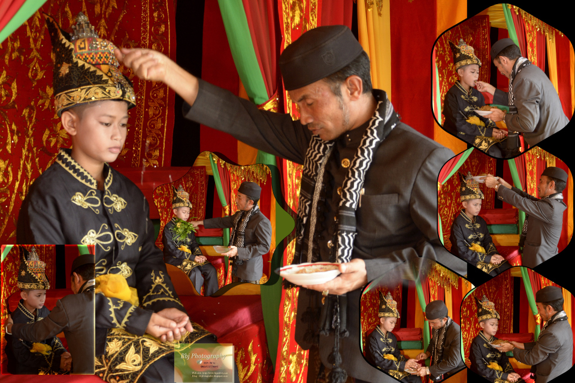
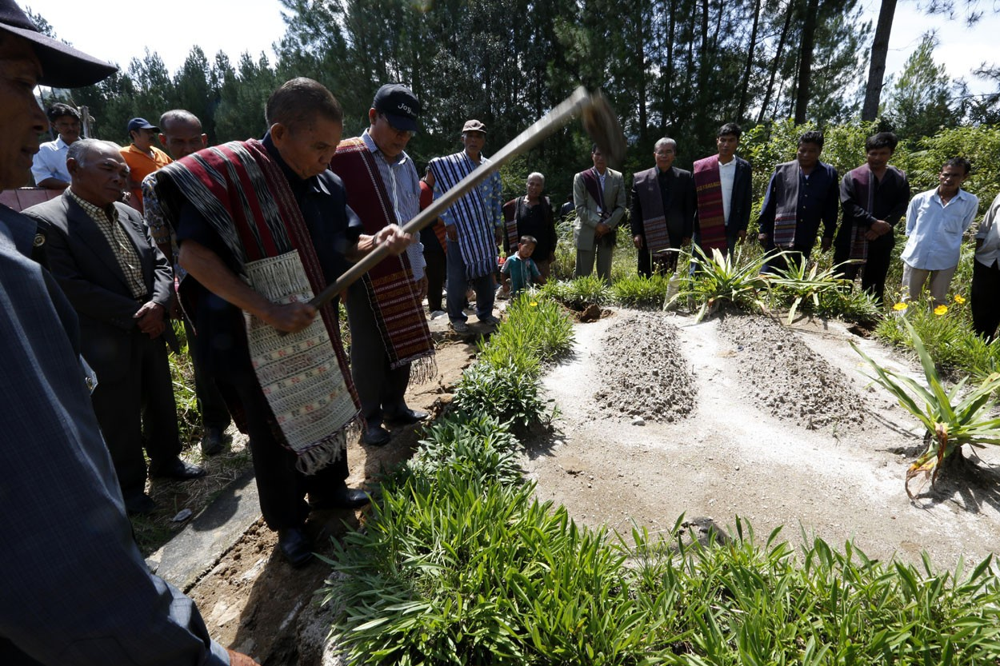
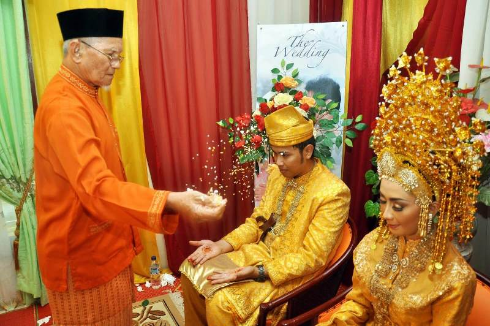
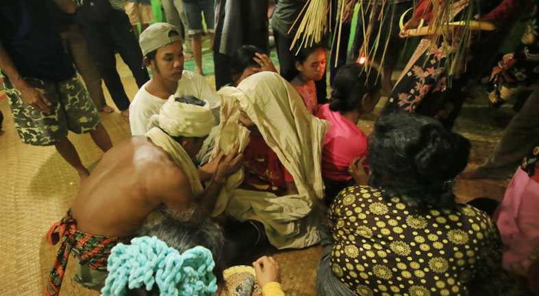
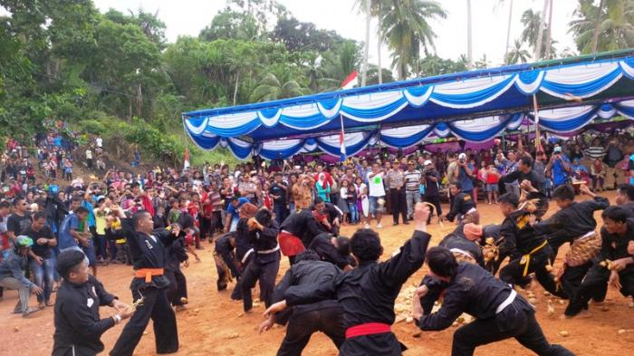
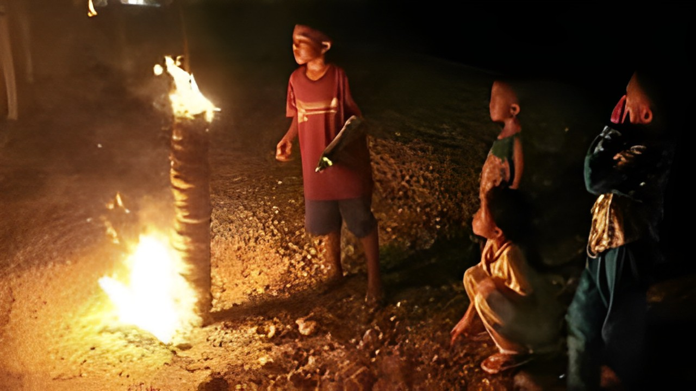
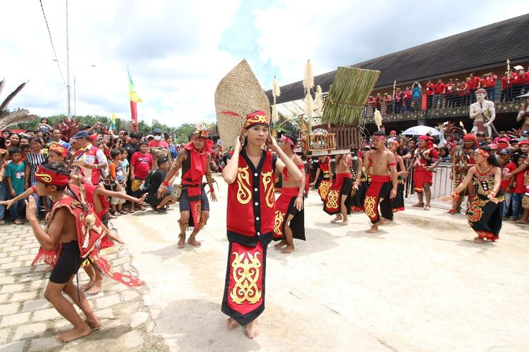
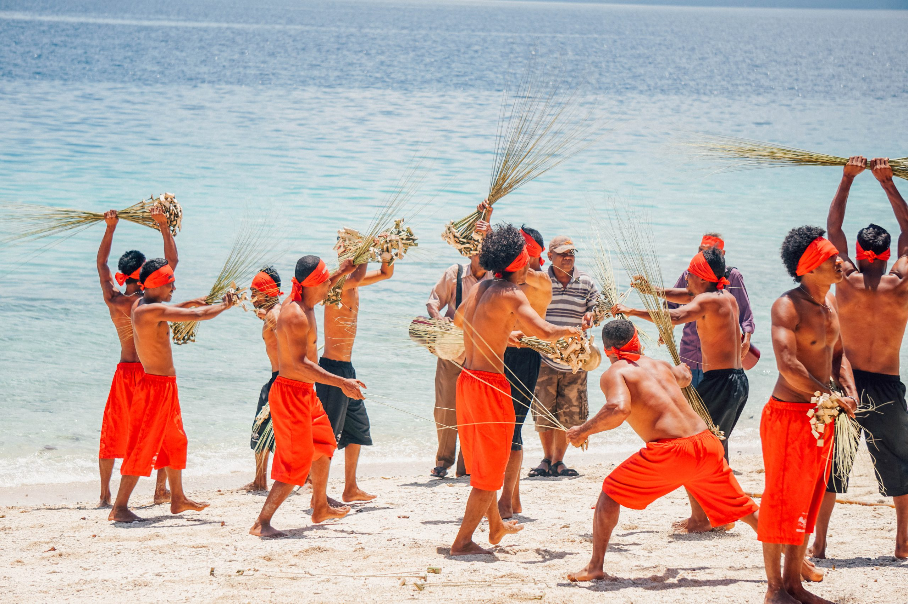
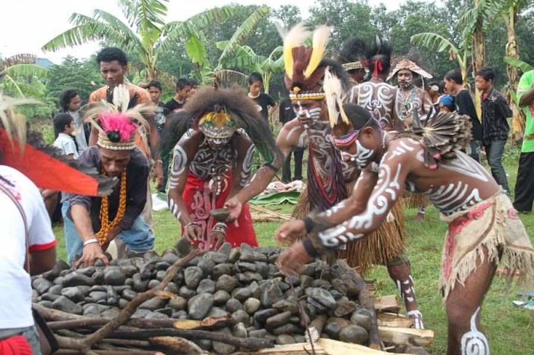

UPACARA ADAT
Upacara adat adalah salah satu bentuk adat istiadat atau kebiasaan masyarakat tradisional yang diduga masih mempunyai nilai-nilai relevan bagi kehidupan dan kebutuhan masyarakat sekitarnya. Hal itu dirasa sebagai bentuk upaya manusia agar dapat berhubungan dengan arwah atau roh para leluhur dan bentuk kesanggupan masyarakat sekitar untuk menyelaraskan diri akan alam dan lingkungan luas. Upacara adat dikenal sebagai salah satu warisan nenek moyang dari masing-masing daerah yang telah dijaga dan dilestarikan secara turun-temurun. Meskipun perkembangan zaman semakin maju dan canggih, akan tetapi upacara adat tak dilupakan oleh sebagian masyarakat, khususnya masyarakat yang kental akan adat. Hal itu karena upacara adat dirasa mempunyai nilai filosofis dan kekuatan tersendiri oleh sebagian masyarakat setempat.Di Indonesia sendiri, tradisi upacara adat banyak dilakukan oleh masyarakat berbagai daerah yang mana di tiap-tiap daerah tentu memiliki upacara adatnya masing-masing. Berikut dijelaskan secara ringkas mengenai upacara adat yang dilakukan oleh masyarakat dari berbagai daerah di Indonesia.
Upacara Adat di Aceh
Upacara adat di Aceh, yakni Peusijuk. Peusijuk dikenal sebagai tradisi turun-temurun yang dilakukan oleh masyarakat Aceh sebagai perwujudan syukur atas anugerah yang diberikan oleh Allah. Umumnya, upacara adat Peusijuk diselenggarakan saat acara kelahiran, naik haji, pernikahan, dan sebagainya.
Upacara Adat di Sumatera
Upacara adat di Sumatera Utara adalah Tradisi Mangokkal Holi. Tradisi ini dikenal sebagai ritual untuk mengambil tulang belulang leluhur masyarakat dari dalam pemakaman, kemudian disimpan dalam peti dan diletakkan di salah satu bangunan tugu yang memang disediakan secara khusus.Sementara upacara adat di Sumatera Barat adalah Perayaan Tabuik. Perayaan ini dilaksanakan oleh masyarakat Pariaman (Sumatera Barat) guna memberikan peringatan meninggalkan cucu Nabi Muhammad, yakni Hasan dan Husein. Selanjutnya, upacara adat di Sumatera Selatan adalah Sedekah Rame. Upacara ini dilaksanakan oleh suku Lahat dan diselenggarakan oleh para petani setempat yang berkaitan dengan kegiatan pertanian pula.
Upacara Adat di Kepulauan Riau dan Riau
Upacara adat di Kepulauan Riau dikenal sebagai Tepuk Tepung Tawar. Adapun maksud dan tujuan digelarnya upacara ini guna memberikan berkah demi keselamatan dan kesejahteraan, serta menghapus kesialan orang yang melakukan upacara adat ini.
Upacara Adat Jambi
Upacara adat Jambi, yakni Upacara Besale. Upacara Besale adalah bentuk pengobatan tradisional guna mengusir arwah atau roh jahat yang dirasa menjadi asal mula penyakit dari warga suku Anak Dalam.
Upacara Adat Kepulauan Bangka Belitung
Upacara adat dari Kepulauan Bangka Belitung adalah Perang Ketupat. Perang Ketupat dilaksanakan tiap 1 Muharram atau Tahun Baru Islam di pantai Tempilang, tepatnya Kabupaten Bangka Barat.
Upacara Adat Bengkulu dan Lampung
Upacara adat di Bengkulu dinamai sebagai Bakar Gunung Api. Upacara ini diselenggarakan dengan menumpuk batok kelapa sampai menyerupai gunung, lalu membakarnya. Hal itu sebagai perwujudan rasa syukur pada Tuhan.
Upacara Adat di Kalimantan
Upacara adat di Kalimantan Barat dinamai Naik Dango. Upacara adat ini memang kegiatan tahunan yang diselenggarakan oleh masyarakat Dayak sebagai ucapan syukur pada Sang Pencipta atau mereka menyebutnya Nek Jubata atas panen padi
Upacara Adat di Sulawesi dan Gorontalo

Upacara adat di Sulawesi Utara disebut sebagai Mekikuwa yang diselenggarakan suku Minahasa sebagai ucapan permohonan sekaligus rasa syukur pada Tuhan. Kemudian, di Sulawesi Tengah dikenal sebagai ritual Mora’akeke sebagai bentuk permohonan agar Tuhan mengurangi sinar matahari. Di Sulawesi Tenggara dikenal sebagai upacara adat Posuo yang memang dilaksanakan terkait kesucian seorang wanita.
Upacara Adat di Maluku
Upacara adat di Maluku dikenal sebagai Pukul Sapu yang digelar seminggu setelah Idul Fitri atau setiap 7 Syawal oleh para lelaki, sementara di Maluku Utara dikenal dengan Tradisi Abdau, yakni penyambutan Idul Adha.
Upacara Adat di Papua
Upacara adat di Papua, yakni Pesta Bakar Batu yang terdiri dari 3 tahapan, di antaranya persiapan, bakar babi, dan terakhir makan bersama. Kemudian, di Papua Barat ada Tanam Sasi, yaitu rangkaian upacara adat kematian dengan menanam Sasi atau sejenis kayu.